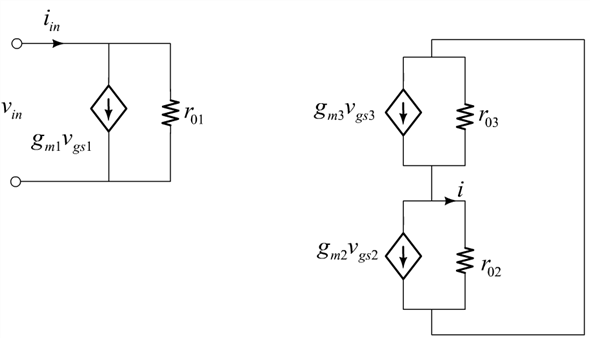

The equivalent circuit for the Wilson MOS mirror configuration.

Figure 1
The expression for the current, is given by as .
The current, i is given by the expression as .
We know that
Substitute the expression in .
Find the expression for the voltage, from the derived expression is, .
Divide numerator and denominator of the right hand side with the term, .
Hence, the input current is,
The voltage is given by the expression .
Substitute in the expression then
Hence, the ratio, is obtained as , when the condition .
Since ,
Thus, the value of from the expression, .
Hence, the resistance, for the Wilson MOS mirror is .